×
Parameter Scan
During a parameter scan, configurations are systematically assigned to combinations the specified input parameters and simulations are carried out.
The extension offers two possibilities for designing a parameter scan:
Full Factorial Parameter Scan
The full factorial parameter scan iterates over all combinations of input parameters and performs a simulation run
with each possible input configuration.
To perform a full factorial parameter scan, the following information is required required in annotated form:
- Input parameters for the parameter scan in the following syntax:
a=[2,4,0.5] # @parameter
b=[1,2,0.1] # @parameter
The first value of the list defines the start value of the associated parameter (lower bound).
The second value of the list defines the final value of the associated parameter (upper bound).
The third value of the list defines the step size during the parameter scan.
The annotation @parameter defines the triple as an input parameter.
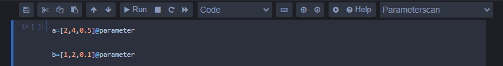
- A file path for the generated experiment results in the following syntax:
'mySimulationStudy/results.csv' # @output_file (with quotation marks)
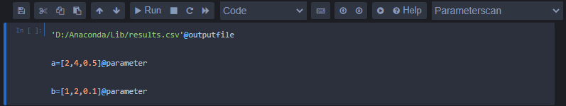
- Desired output variables in the following syntax:
myOutput # @output_variable
The specified output variables have to be extractable from the simulation, otherwise the simulation will output
all possible data.
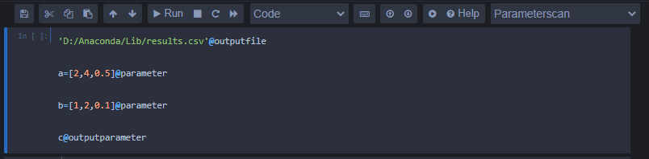
- Special cases for which no simulation run is to be performed in the following syntax:
'a'+'b'>1 # @exception
Exceptions can be any Boolean expression (evaluates to true or false).
If particlar input parameter configurations shall be excluded from the analysis, the used parameters have to be marked with quotation marks.
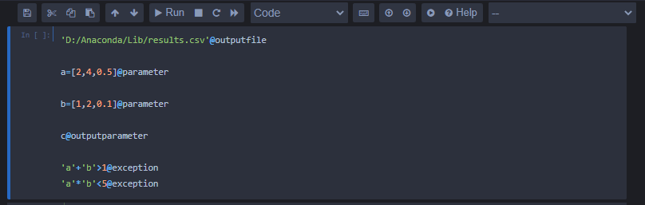
Latin Hypercube
In the Latin hypercube method, the value ranges of the input parameters are divided into n subspaces, and then
exactly n input parameter configurations are are sampled so that no two configurations share the same
"row" or "column". The Latin hypercube design requires fewer design points and thus reduces
runtime of the simulation experiment compared to a full factorial scan.
To perform Latin hypercube sampling, the following annotations are needed:
- Input parameters for sampling in the following syntax:
a=[2,4] # @parameter
b=[1,2] # @parameter
The first value of the list defines the lower bound of the associated parameter.
The second value of the list defines the upper bound of the associated parameter.
The annotation @parameter defines the tuple as an input parameter.
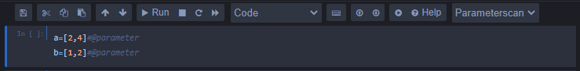
- A file path for the generated experiment results can be provided in the following syntax:
'mySimulationStudy/results.csv' # @output_file (with quotation marks)
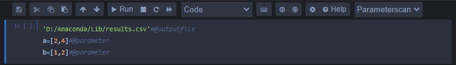
- Desired output variables in the following syntax:
myOutput # @output_variable
It must be possible to extract the specified output variables from the simulation, otherwise
the simulation will output all possible data.
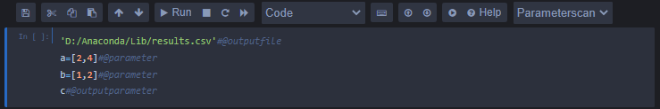
- Special cases for which no simulation run shall be performed in the following syntax:
'a'+'b'>1 # @exception
Exceptions can be any Boolean expression (evaluating to be true or false).
If parameter configurations shall be excluded, this has to be indicated by quotation marks around the parameter names.
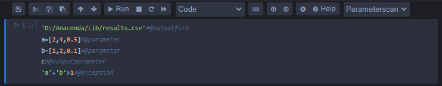
To perform Latin hypercube sampling and not a full factorial parameter scan, the annotation term @number_of_sample_points must also be set in the following syntax:
200 # @number_of_sample_points
This indicates how many subspaces the parameters are divided into and how many samples are to be generated accordingly.
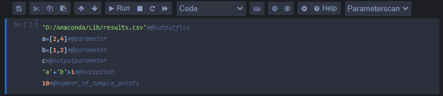
×
Simulation-based Optimization
In an optimization experiment, a desired objective function is minimized or maximized by changing the configurations
of the input parameters. The extension offers two different options for optimization:
Differential Evolution
The first way to search for an optimal input parameterization
is a differential evolution algorithm. In this algorithm there is a so-called population,
in which each individual represents a parameterization of the input parameters.
A simulation run is now carried out with each of these "candidates" and the result is recorded.
Subsequently, new candidates are entered in the input space based on the positions of the already existing candidates
generated and further simulation runs are carried out with their parameterizations.
If the resulting objective function value of the new candidate is now smaller (when minimizing) or larger (when maximizing),
the new candidate is included in the population, otherwise it is discarded.
This process is now repeated over several "generations"
so that candidates with a worse objective function value are excluded over the generations,
while candidates with better objective function values remain in the population and form the basis for even better candidates in future generations.
To perform an optimization with the differential evolution algorithm, the following specifications can be made:
- Input parameters for the parameter scan in the following syntax:
a=[2,4,3] # @parameter
b=[1,2,1.5] # @parameter
The first value of the list defines the lower bound of the associated parameter.
The second value of the list defines the upper bound of the associated parameter.
The third value defines the initial value of the parameter.
The #@parameter defines the triple as an input parameter.
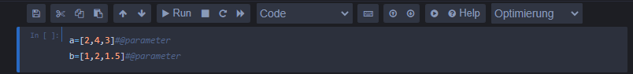
- A file path for the generated experiment results in the following syntax:
'mySimulationStudy/results.csv' # @output_file (with quotation marks)
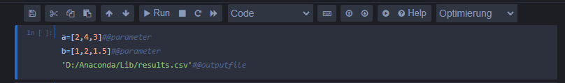
- Desired output variables in the following syntax:
myOutput # @output_variable
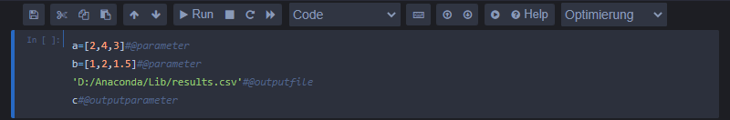
- The size of the population in the following syntax:
25 # @population
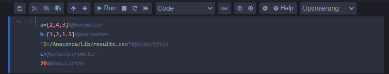
If no population is specified, the population size is set to 3.
- The maximum number of generations in the following syntax:
5 # @generations
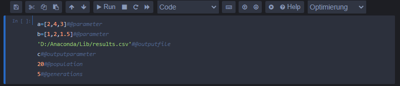
If no maximum number is specified, the number is set to 1.
Dual Annealing
The alternative to the differential evolution algorithm
for optimization within the extension is the dual annealing algorithm.
A cooling process is imitated by the "temperature".
A probability represents that a found local optimum for an occupancy
with a worse objective function value is discarded, so that under certain circumstances another
local or even the global optimum is found. The probability
that a poorer result is accepted depends on the one hand on
how much the poorer result deviates from the current optimum and, on the other hand,
how large the current temperature factor is. The temperature function is a
positive monotonically decreasing sequence, which is why the probability
that a worse result is accepted over the iterations of the algorithm is
continuously declining. Also the jump distance from the current optimum to other
parameterizations depends on the current temperature.
To perform an optimization with the dual annealing algorithm, the following specifications can be made:
- Input parameters for the optimization procedure in the following syntax:
a=[2,4,3] # @parameter
b=[1,2,1.5] # @parameter
The first list value defines the lower bound of the associated parameter.
The second list value defines the upper bound of the associated parameter.
The third list value defines the initial value of the associated parameter.
The annotation with @parameter defines this triple as an input parameter.
- A file path for the generated experiment results in the following syntax:
'mySimulationStudy/results.csv' # @output_file (with quotation marks)
- Desired output variable in the following syntax:
myOutput # @output_variable
- The initial temperature in the following syntax:
4000 # @temperature
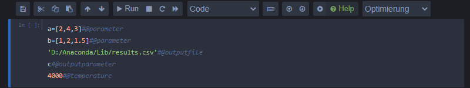
If no initial temperature is specified, it is set to 5230.
- The number of iterations in the following syntax:
100 # @iterations
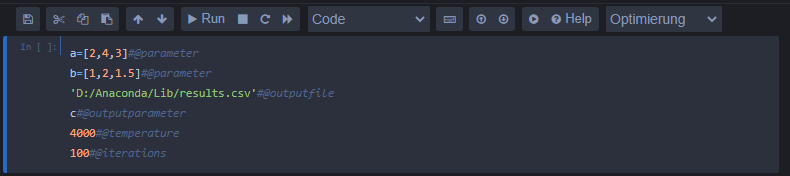
If no number of iterations is specified, the number is set to 1000.
×
Help
Introduction
This Jupyter Notebook Extension can be used to automatically generate experiment code and is intended to speed up and facilitate the iterative process of simulation studies.
In order to be able to use the extension, the simulation model (plus the simulator) for which experiments are to be generated must be inserted into the notebook.
It is important that the simulator is interfaced via a method called run_sim, which must pass a dictionary with input parameters and a list of output variables
and returns the simulation results.
User Interface
The extension adds four more elements to the Jupyter Notebook toolbar, two of which are buttons, one is a selection menu, and one is a checkbox.
Button for experiment generation
If this is pressed, the desired experiment code is generated in Python depending on the user input and written into a new code cell of the notebook.
This can now be started via the notebook's Run command, which will carry out the corresponding simulation experiment.
Help
If the help button is pressed, the notebook splits into two halves, on the left is the original notebook with the cells it contains, on the right
there is a help tool on this page that contains information on how to use the extension. There are three different sections within the help tool, one for general information
on handling the extension and two for the existing experiment types. These sections can be opened by pressing the corresponding buttons. These contain help and examples in the form of text and images,
which document the process of experiment generation and are intended to make it more understandable for the user. The help page can be closed again by pressing the help button again.

Selection Menu for the Experiment Type
In addition to the added buttons, there is a selection menu that can be used to choose between different experiment types. Two different experiment types are currently available,
a parameter scan and a simulation-based optimization. If one of these options is selected and then the
experiment generation button is pressed, code is generated according to the selected experiment type. If no experiment type is selected, no code is generated.
Annotations
In order to further specify the simulation experiments to be generated by the extension, an annotation language was developed through which the user
can control the generated experiments to their needs. Terms of this annotation language can be written in any cell of the notebook and always exist
of an expression followed by the symbol "@" and then the name of the annotation word. If the annotation is part of a code cell, in addition, it has to be put inside a line comment.
Which annotations are available depends on the
experiment type and preferred methodology. A more detailed description of the syntax of this annotation language can be found in the corresponding help sections for the individual experiment types.